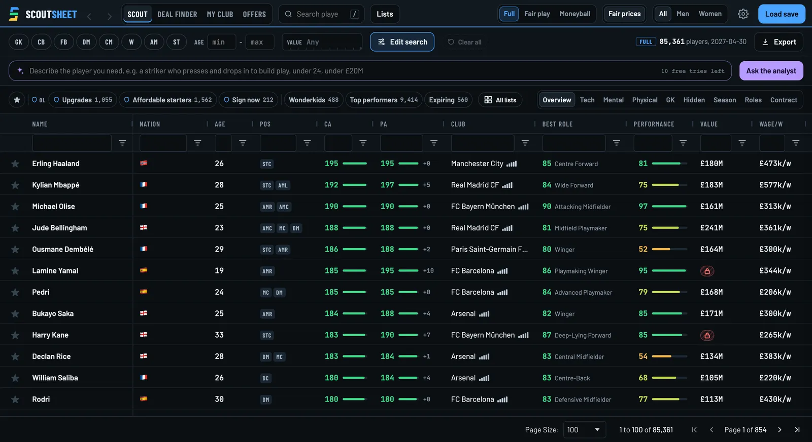
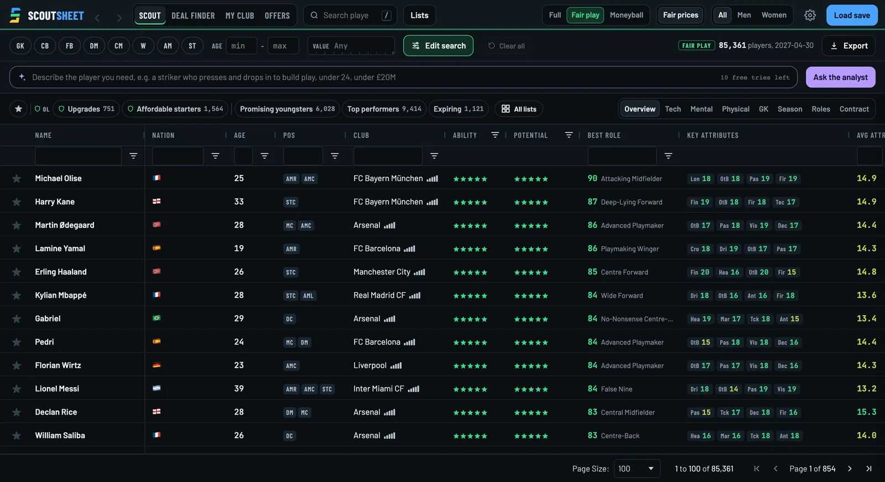
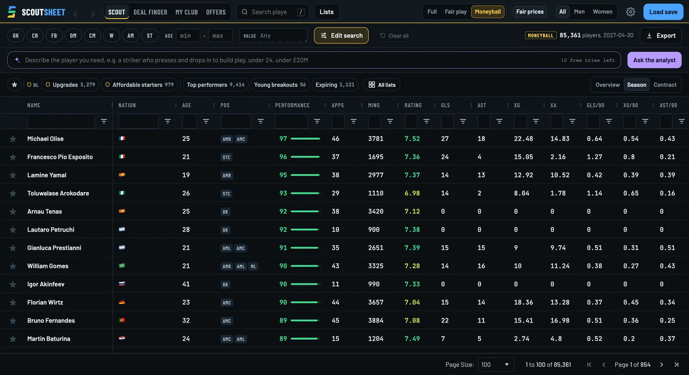
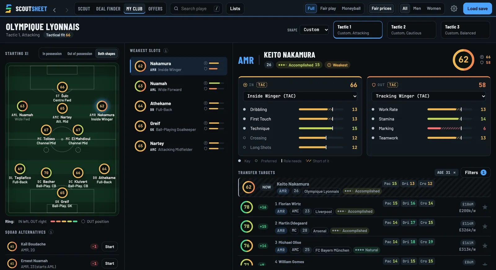
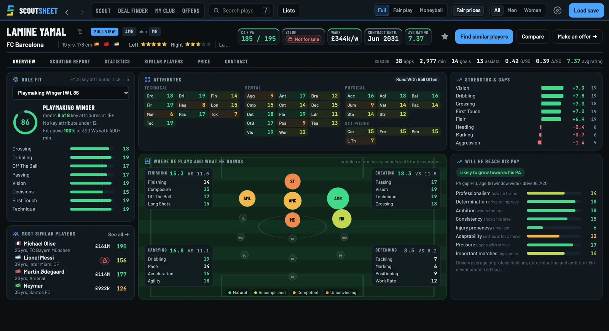
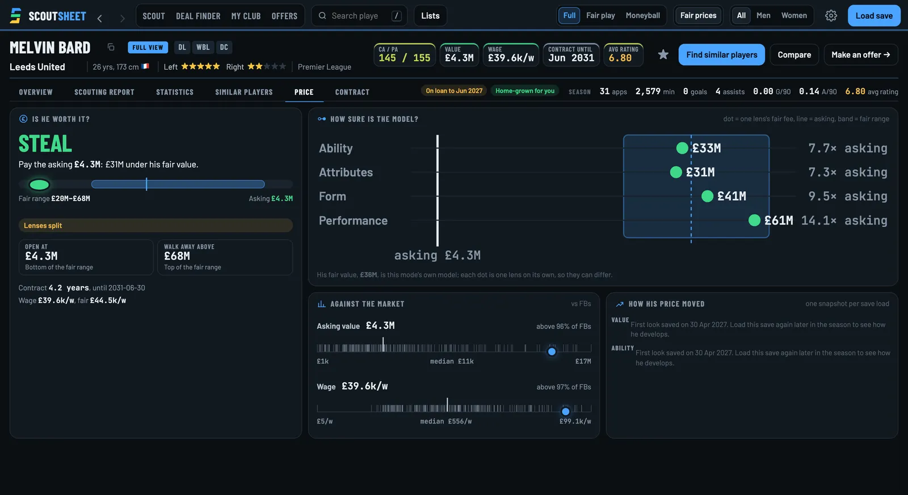

Free scouting tool for Football Manager 26 and 27 | v0.7.1
Sign the stats.Not the name.
Every player in your own save, in one table. Find the ones better than their price.
Read-only. Your save never leaves your computer.
Pick how much you want to know.



How it works
Your save.
Your data.
Your way.
Your save
~1min
Read-onlyYour data
85,361players
Men and womenYour way
AppCSV
Export any listYour perfect window
Spend less.
Sign better.
See where your team is weak.
5weakest slots
Know a player in one look.
4scores
Spot the bargains.
-88%Melvin Bard
Transfer window's open
Get
ScoutSheet.
Unofficial. Not affiliated with Sports Interactive, SEGA or Football Manager.
First launch, step by step.
- Unzip the folder first. Don't run it from inside the zip.
- Double-click
ScoutSheet.exe. If Windows says it protected your PC, click More info. - Click Run anyway. That's the only time you'll see it. From then on, the app installs its own updates in one click.
- Unzip
ScoutSheet-mac.zip. - Drag ScoutSheet to Applications, then double-click it. From there it can install its own updates.
- The app opens in its own window. Pick your save.
Intel Mac? Download ScoutSheet-mac-intel.zip instead; the steps are the same. Not sure which you have: Apple menu → About This Mac, "Chip" means Apple Silicon, "Processor" means Intel.
Before you ask
FAQ
Can it break or change my save?
No. The save is only read, never written. ScoutSheet makes its own copy of the player data on your computer and works from that.
Is it cheating?
Only if you want it to be. Fair play hides CA, PA, hidden attributes and personality, so you scout with what a scout shows you in game. Moneyball hides attributes entirely and judges players on what they do in matches.
What is the fair price?
What a player should cost, worked out from similar players (same kind of profile, age, level and contract) in your own save. ScoutSheet then tells you how far under or over it he is selling. In Moneyball, a player needs about ten full games (900 minutes) before he gets one.
Can I use the data in my own spreadsheet?
Yes. Any list in the app exports to a CSV file, which opens in Excel, Google Sheets, Numbers or any data tool you like. It's your save, so it's your data.
Which saves work?
Football Manager 27 and 26 saves (.fm). The app lists the ones it finds. Loading another save replaces the previous one.
Does it include women's football?
Yes. Every player in the save, men and women, with a switch between them.
Does it need the internet?
No. Everything runs on your computer. At launch it asks GitHub whether a newer version exists. If there is, one click installs it and restarts the app. You can turn the check off in Settings. Nothing about you or your save is sent.
Why does Windows warn me about it?
Microsoft's signing costs a yearly fee, which a free project doesn't pay, so SmartScreen asks once. Click More info, then Run anyway. The Mac version is signed and notarised by Apple and opens without a warning.
Does it cost anything?
No. It's free and open source. No account, no subscription, and the app only shares usage stats if you say yes at first launch. This website counts visits without cookies (Cloudflare Web Analytics and its own daily totals), and with Google Analytics only if you accept cookies.